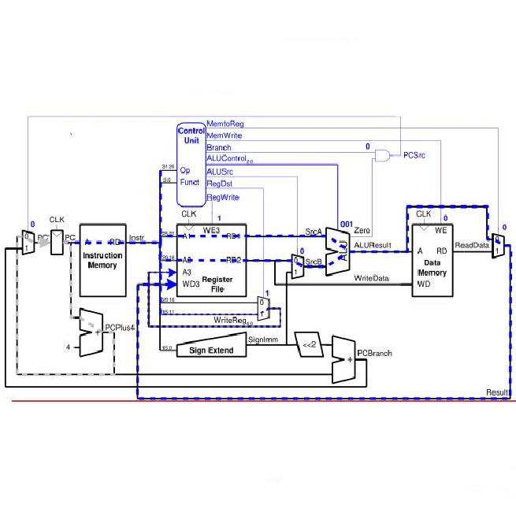

This program simulates the functions of a single-cycle processor by handling branches/conditional branches, additions, subtractions, and noOps. This program cycle shifts instruction sets through each stage of the processor (IF, ID, EX, MEM, and WB).
IF: Instruction Fetch ID: Instruction Decode EX: Execute MEM: Memory WB: Write Back
Source: tliam1/SSP